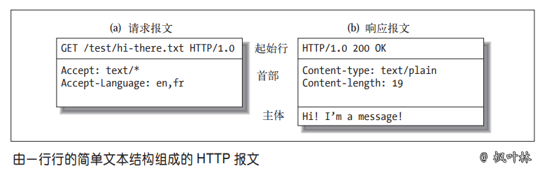
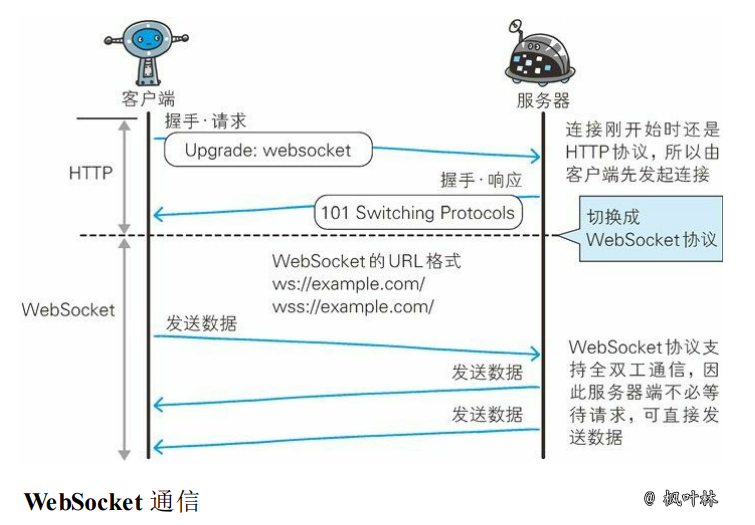

问题与简答
网络篇
1. 计算机网络体系结构

各层作用
- 应用层：应用层协议定义的是应用进程间通信和交互的规则
- 运输层：运输层的任务就是负责向
两台主机中进程之间的通信提供通用的数据传输服务 - 网络层：把运输层产生的报文段或用户数据报封装成
分组或包进行传送 - 数据链路层：将网络层交下来的 IP 数据报组装成帧，并在两个相邻结点间的链路上传送
- 物理层：利用物理媒体以
比特形式传送数据
拓展阅读 《计算机网络体系结构》
2. UDP 的主要特点
- UDP 是
无连接的，即发送数据之前不需要建立连接(发送数据结束时也没有连接可释放)，减少了开销和发送数据之前的时延 - UDP 使用
尽最大努力交付，即不保证可靠交付，主机不需要维持复杂的连接状态表 - UDP 是
面向报文的，发送方的 UDP 对应用程序交下来的报文，在添加首部后就向下交付 IP 层。UDP 对应用层交下来的报文，既不合并，也不拆分，而是保留这些报文的边界 - UDP
没有拥塞控制，网络出现的拥塞不会使源主机的发送速率降低。这对某些实时应用是很重要的 - UDP 支持一对一、一对多、多对一和多对多的交互通信
- UDP 的
首部开销小，只有8个字节，比 TCP 的20个字节的首部要短
拓展阅读 《用户数据报协议 UDP》
3. TCP 的主要特点
- TCP 是
面向连接的运输层协议。应用程序在使用 TCP 协议之前，必须先建立 TCP 连接。在传送数据完毕后，必须释放已经建立的 TCP 连接 - 每一条 TCP 连接只能有两个
端点，每一条 TCP 连接只能是点对点的(一对一) - TCP 提供
可靠交付的服务。通过 TCP 连接传送的数据，无差错、不丢失、不重复，并且按序到达 - TCP 提供
全双工通信。TCP 允许通信双方的应用进程在任何时候都能发送数据。TCP 连接的两端都设有发送缓存和接受缓存，用来临时存放双向通信的数据 面向字节流。TCP 中的“流”指的是流入到进程或从进程流出的字节序列
拓展阅读 《传输控制协议 TCP》
4. 简述三报文握手建立 TCP 连接
- 服务器进程先创建传输控制块 TCB，并处于监听状态，等待客户端的连接请求
- 客户端创建传输控制块 TCB，并向服务器发出连接请求报文段
- 服务器收到连接请求报文段后，如同意建立连接，则发送确认报文段
- 客户端进程收到服务器的确认报文段后，立即回复确认报文段，并进入已建立连接状态
- 服务器收到确认报文段之后，也进入已建立连接状态
传输控制块 TCB(Transmission Control Block)存储了每一个连接中的一些重要信息
5. 建立 TCP 连接为什么最后还要发送确认
这主要是为了防止已失效的连接请求报文段突然又传到了 TCP 服务器，避免产生错误
6. 简述 TCP 连接的释放
- 客户端应用进程发出连接释放报文段，并停止再发送数据，进入 FIN-WAIT-1(终止等待1)状态，等待服务器确认
- 服务器收到连接释放报文段后即发出确认，进入 CLOSE-WAIT(关闭等待)状态，服务器若发送数据，客户端扔要接收
- 客户端收到来自服务器的确认后，进入 FIN-WAIT-2(终止等待2)状态，等待服务器发出连接释放报文段
- 服务器没有要发送的数据，发出连接释放报文段，进入 LAST-ACK(最后确认)状态，等待客户端确认
- 客户端收到连接释放报文段后，发出确认，进入 TIME-WAIT(时间等待)状态，经过时间等待计时器设置的时间 2MSL 后，进入 CLOSED(关闭) 状态
- 服务器收到客户端报文段后，进入 CLOSED 状态
7. TIME-WAIT 是什么，为什么必须等待 2MLS
TIME-WAIT 是一种 TCP 状态。等待 2MLS 可以保证客户端最后一个报文段能够到达服务器，如果未到达，服务器则会超时重传连接释放报文段，使得客户端、服务器都可以正常进入到 CLOSE(关闭) 状态
8. TCP 粘包问题
粘包问题
在 TCP 这种字节流协议上做应用层分包是网络编程的基本需求。分包指的是在发生一个消息(message)或一帧(frame)数据时，通过一定的处理，让接收方能从字节流中识别并截取(还原)出一个个消息。因此，“粘包问题”是个伪命题
长连接分包
- 消息长度固定
- 使用特殊的字符或字符串作为消息的边界，例如 HTTP 协议的 headers 以“\r\n”为字段的分隔符
- 在每条消息的头部加一个长度字段，这恐怕是最常见的做法
- 利用消息本身的格式来分包，例如 XML 格式的消息中
<root>...</root>的配对，或者 JSON 格式中的 { ... } 的配对。解析这种消息格式通常会用到状态机(state machine)
拓展阅读 《TCP粘包拆包》
9. UDP、TCP 区别，适用场景
| 对比项 | UDP | TCP |
|---|---|---|
| 连接性 | 无连接 | 面向连接 |
| 可靠性 | 不可靠 | 可靠 |
| 报文 | 面向报文-数据报模式 | 面向字节流-流模式 |
| 双工性 | 一对一、一对多、多对一、多对多 | 全双工 |
| 流量控制 | 无 | 有(滑动窗口) |
| 拥塞控制 | 无 | 有(慢开始、拥塞避免、快重传、快恢复) |
| 传输速度 | 快 | 慢 |
| 资源要求 | 较少 | 较多 |
| 首部开销 | 8字节 | 20字节 |
| 数据顺序 | 不保证 | 保证 |
UDP 适用场景
面向数据报方式、网络数据大多为短消息、拥有大量 Client、对数据安全性无特殊要求、网络负担非常重，但对响应速度要求高
TCP 适用场景
文件传输(FTP HTTP 对数据准确性要求较高，速度可以相对慢) 发送或接收邮件(POP IMAP SMTP 对数据准确性要求高，非紧急应用) 远程登录(telnet SSH 对数据准确性有要求，有连接的概念)
10. 建立 socket 需要哪些步骤
- 创建 socket
- 绑定 socket 到指定地址和端口
- 开始监听连接
- 读取客户端输入
- 关闭 socket
11. DNS 主要作用是什么
计算机既可以被赋予 IP 地址，也可以被赋予主机名和域名。用户通常使用主机名或域名来访问对方的计算机，而不是直接通过 IP 地址访问
但要让计算机去理解名称，相对而言就变得困难，因为计算机更擅长处理一长串数字
为了解决上述问题，DNS 服务应运而生。DNS 协议提供通过域名查找 IP 地址，或逆向从 IP 地址反查域名的服务
12. HTTP 报文组成
HTTP 报文是由简单字符串组成，HTTP 报文都是纯文本，不是二进制代码，可以很方便地对其进行读写

从客户端发往服务器的 HTTP 报文称为请求报文(request message)。从服务器发往客户端的报文称为响应报文(response message)。HTTP 请求和响应报文的格式很类似
HTTP 报文组成部分
- 起始行：报文的第一行就是起始行，在请求报文中用来说明要做些什么，在响应报文中说明出现了什么情况
- 首部字段：起始行后面有零个或多个首部字段。每个首部字段都包含一个名字和一个值
- 主体：空行之后就是可选的报文主体了，其中包含了所有类型的数据
13. HTTP 状态码
HTTP 状态码用来告诉客户端，发生了什么事情，状态码位于响应的起始行中
状态码分类
| 状态码 | 整体范围 | 已定义范围 | 分类 |
|---|---|---|---|
| 1XX | 100~199 | 100~101 | 信息提示 |
| 2XX | 200~299 | 200~206 | 成功 |
| 3XX | 300~399 | 300~305 | 重定向 |
| 4XX | 400~499 | 400~415 | 客户端错误 |
| 5XX | 500~599 | 500~505 | 服务器错误 |
常见状态码
| 状态码 | 原因短语 | 含义 | 考察概率 |
|---|---|---|---|
| 200 | OK | 请求没有问题 | * |
| 206 | Partial Content | 部分或 Range(范围) 请求 | * |
| 301 | Moved Permanently | 在请求的链接被移除时使用 | ** |
| 302 | Found | 在请求临时的链接使用 | ** |
| 304 | Not Modified | 资源未被修改可使用旧资源 | ** |
| 307 | Temporary Redirect | 在请求临时的链接使用 | ** |
| 400 | Bad Request | 告知客户端发送了错误请求 | * |
| 403 | Forbidden | 请求被服务器拒绝 | * |
| 404 | Not Found | 无法找到所请求的 URL | * |
| 413 | Request entiry too large | 请求实体过大 | * |
| 500 | Internal Server Error | 服务器遇到错误 | * |
| 502 | Bad Gateway | 代理或网关错误(无法连接到其父网关) | * |
| 503 | Service Unavailable | 无法为请求提供服务 | * |
| 504 | Gateway Timeout | 代理或网关超时(等待另一服务器响应超时) | * |
拓展阅读 《HTTP状态码》
拓展阅读 《5xx系列错误》
14. 常见的 HTTP 方法

拓展阅读 《HTTP方法详解》
15. GET 与 POST 请求方式区别
| GET | POST |
|---|---|
| 后退按钮/刷新无害 | 数据会被重新提交 |
| 数据长度限制/URL长度2048字符 | 长度无限制 |
| 数据可见/安全性差 | 不可见/更安全 |
| 可以被缓存 | 不可以被缓存 |
| 书签可收藏 | 书签不可收藏 |
16. HTTP 优缺点
基于应用级的接口，使用方便
传输速度慢，数据包大；如实现实时交互，服务器性能压力大；数据传输安全性差
17. HTTPS 通信原理

拓展阅读 《HTTPS细节介绍》
18. HTTP 2.0
多路复用、客户端拉拽/服务器推送、流量控制、WebSocket
19. WebSocket
WebSocket 是一种通信协议，定义了一个全双工通信信道，仅通过 Web 上的一个 Socket 即可进行通信
主要特点
- 推送功能：支持由服务器向客户端推送数据的推送功能
- 减少通信量：只要建立起 WebSocket 连接，就希望一直保持连接状态

20. IPv6 与 IPv4 有什么变化
更大的地址空间、扩展的地址层次结构、灵活的首部格式、改进的选项、允许协议继续扩充、支持资源的预分配
21. 什么是心跳机制
心跳机制是定时发送一个自定义的结构体(心跳包)，让对方知道自己还活着，以确保连接的有效性的机制
22. 什么是长连接
长连接，指在一个连接上可以连续发送多个数据包，在连接保持期间，如果没有数据包发送，需要双方发链路检测包